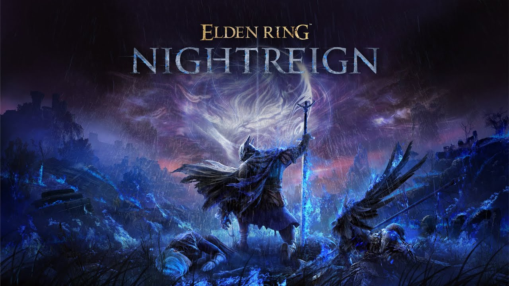

Elden Ring 2 anunciado oficialmente
FromSoftware ha anunciado oficialmente Elden Ring 2, la secuela de su aclamado RPG. El juego promete un mundo aún más vasto y nuevas mecánicas.
Nuevas mecánicas
Elden Ring 2 introducirá un sistema de combate mejorado y una mayor interacción con el entorno...
Lanzamiento
Se espera que el juego llegue en 2026.